State of the Association
State of the Association
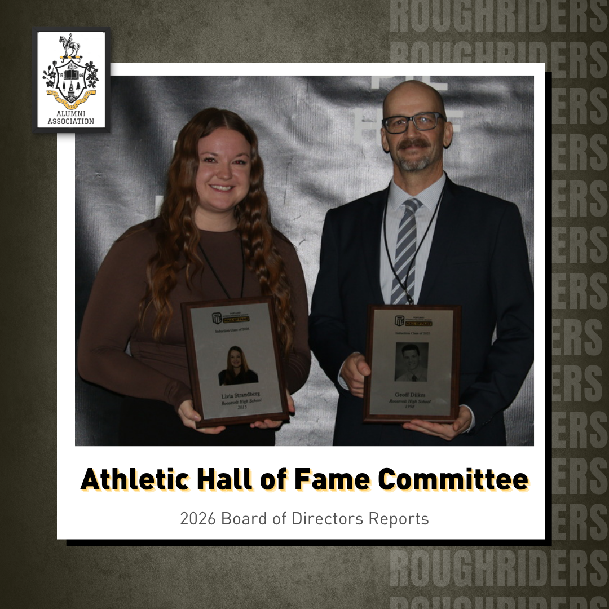
Two Roosevelt alumni were inducted into the PIL Hall of Fame with the 2025 class:
We were also able to add Roy Harrington and Darrell Everett to our Hall of Fame. They were inducted into the Hall of Fame through Grant and Marshall respectively as coaches, but their athletic accomplishments were completed at Roosevelt.
The 2026 induction will be held on November 8th, 2026 and the class will have four Roosevelt alumni:
Ellen Lougheed-Torchia was nominated again but did not make it to the induction list. Ellen was a 3-time PIL Champion on the Uneven Bars, so the inductees are our absolute top athletes.
The 2027 nominee list is subject to change, currently includes:
We have been looking for people to help Eddie de Freitas with the nomination process and background searches for new
nominations. Jim Kennison will continue to help Ed as he did this past year, and Kelly Cheney has agreed to start doing
research and organization and will be a great addition to this team. Successful research has gained us vital information
from relatives of the deceased athletes.
Our nomination forms were presented in a different format this year. We were told that our nomination forms look more
“Corporate” this year. We get 5 nominations per year, some schools have fewer nominations, so we are in a great position
to increase our number of inductees in the future. Jim Kennison met with John Dunn, President of the PIL Hall of Fame in
April. Many points of discussion with clarification on some of the rules for nominations. Jim also showed him our new system
for nominees. John said we have taken our whole process to the next level and the other schools will have to step it up.
Athletic Director Willie Williams left Roosevelt for a promotion at the District Office. His replacement, Kevin Locasio, will
continue to get the information that we will need for future nominations. We’ve asked PPS to give us information on First
Team, Second Team, Honorable Mention, and PIL Championships from 2010 to present. We do not have any of that information
currently available to us. We have also located the District Wrestling Placers (1st through 6th place) information through
the internet. No other school currently has this information available to them. Looks like we have more research as many
wrestlers have District Awards.
As reported last year, we would like to establish a Roosevelt High School Athletic Hall of Fame that is separate from the
PIL Hall of Fame, and are beginning that work.
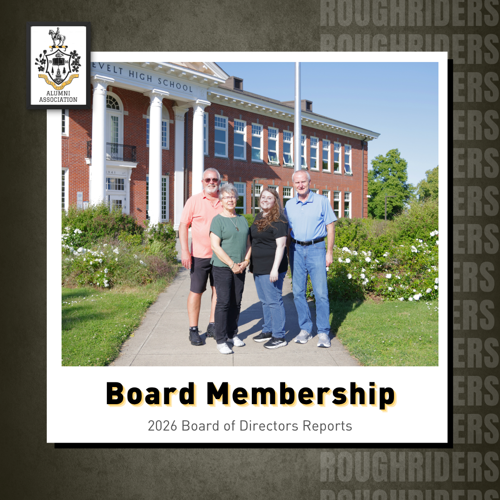
The Association has 25 members on its Board of Directors as of the time of this report.
At the September Board of Directors meeting, a new Board Participation Policy was unanimously approved. This policy establishes
clear expectations for board involvement, including attending board meetings, participating in committees, and representing
the organization. This initiative was one of our goals for the fiscal year, intended to ensure that board membership reflects
active commitment to the work of the RHSAA and strengthen the board’s capacity and accountability moving forward. This policy
was shared with all board members and posted on our website.
There were several leadership transitions within the board’s committee structure. Janine Wolf stepped down as History Committee
Chair after several years of service. She will continue to support history projects as needed, and the organization is
currently working to identify a new committee chair. Dylan Young stepped into the role of Scholarship Committee Chair,
providing clear leadership for that committee moving forward.
In addition, several committees have identified new volunteer roles that must be filled by board members rather than general
volunteers due to the nature of the work involved. These roles help support key areas of the organization where added access,
trust, or oversight is required.
On February 16th, 2026, the Association lost longtime President Mike Verbout. Mike was the founding member behind our creation
and central to our organization’s work. He leaves a lasting impact on Roosevelt High School and our community.
Following this loss, the Executive Committee appointed interim officers to fill the vacancy. Jim Kennison is serving as Interim
President, and Megan Hall is serving as Interim Vice President until the next election of officers at the May Board of
Directors meeting.
On May 6th, 2026, our Picnic Committee Chair Michelle Hall passed away.
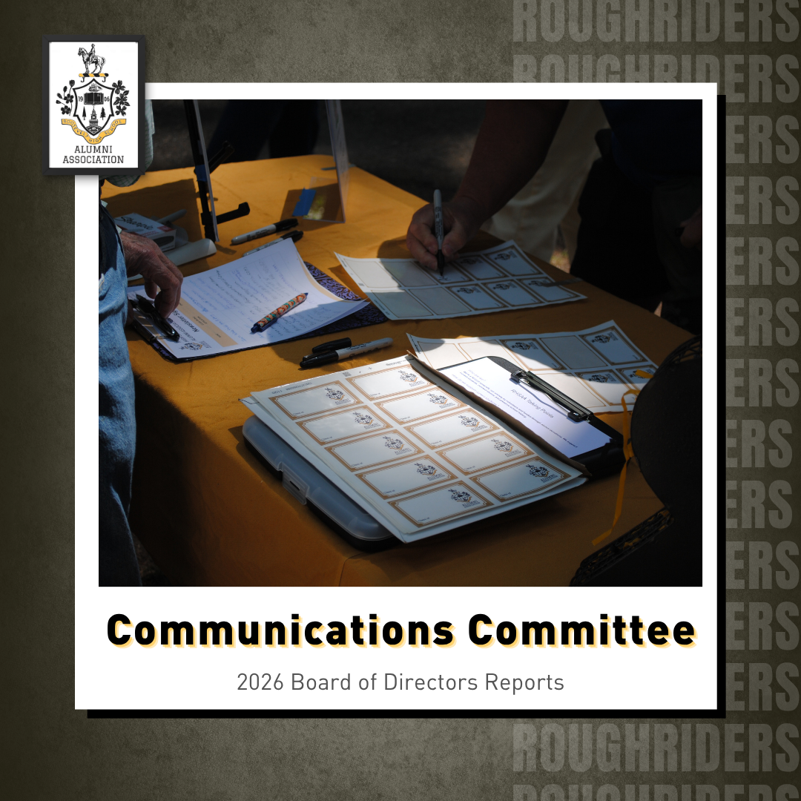
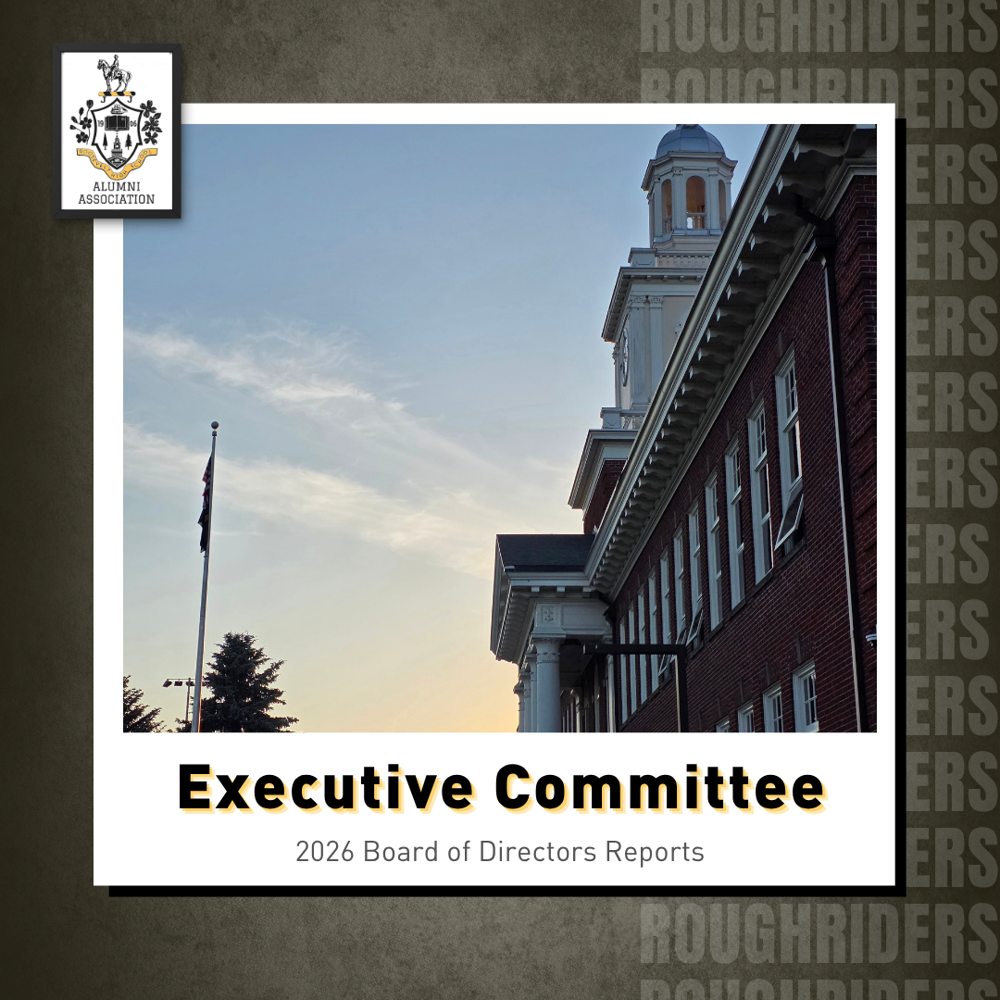
The Executive Committee meets bi-monthly at minimum and addresses all business that must be handled between Board meetings.
Issues the committee responds to include financial decisions such as small grant funding, support for committee projects,
association planning, and a variety of other matters that must be dealt with in a timely manner. The committee typically
meets at 6 PM on the 3rd Thursday of even-numbered months. Board members who would like can attend executive committee
meetings, either virtually or in-person.
As part of the Association wide goal this year, the committee had a planning session to discuss committee purpose and our
future. We identified the need for additional committee members to help us continue our work overseeing the organization,
and set a goal related to supporting the board at-large.
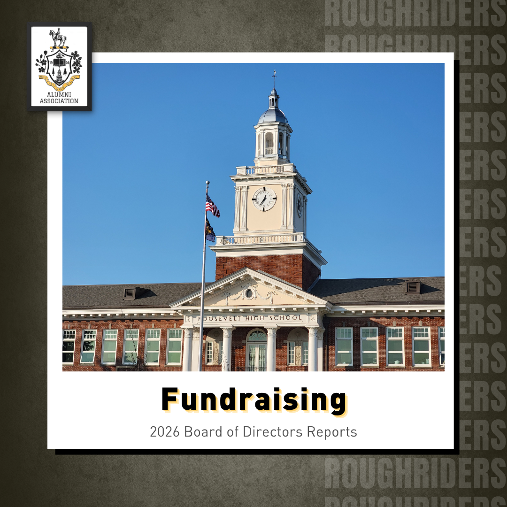
This year truly brought both excitement and a few hurdles for us. We were presented with a unique challenge—two alumni
stepped forward and pledged to match any funds we could raise with like donations. The challenge began in July 2025
and concluded in January 2026. With less than a year to mobilize, our alumni community rallied like never before,
resulting in donations that exceeded every previous year since our founding. In the end, we raised an incredible
$100,000+.
The need at Roosevelt has only grown, especially with the recent PPS budget cuts beginning to impact us in the 2026 school
year. The generosity of our alumni ensures we can continue to support our students and buffer these shortages. A heartfelt
thank you goes out to everyone who entrusted us with their donations—every dollar we raise directly benefits the students
of Roosevelt. We truly couldn’t do this without your steadfast support.
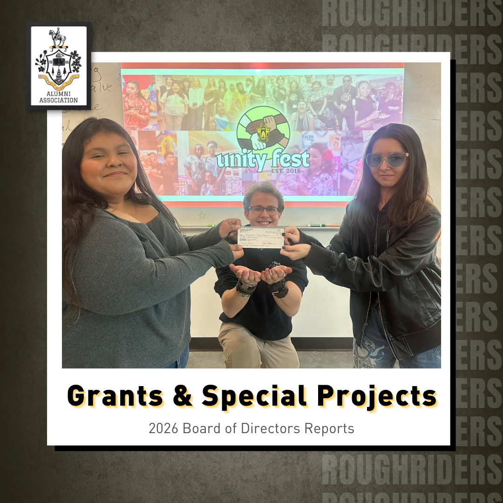
This section details the RHSAA's support of student programs, special projects, and other grant recipients over the past year.
| Group/Project | Award | Award Date |
|---|---|---|
| Bardy Trophy - Athletics | $725 | 7/24/2025 |
| Dance Team Uniforms | $1,000 | 7/30/2025 |
| Leadership (Homecoming) | $2,000 | 9/12/2025 |
| BBQ Tailgate (Homecoming) | $875 | 9/3/2025 |
| Dance Team | $1,000 | 10/8/2025 |
| Men's Basketball Team | $1,000 | 10/30/2025 |
| Trophy Cases | $165 | 11/12/2025 |
| Bardy Trophy - Rose Festival | $470 | 11/22/2025 |
| Men's Basketball Team | $2,000 | 11/20/2025 |
| Raquet Ball Team | $300 | 12/3/2025 |
| Christmas Gift Cards | $3,750 | 12/11/2025 |
| Baseball Team | $1,000 | 1/5/2026 |
| Yearbook | $300 | 1/9/2026 |
| Softball Team | $1,000 | 1/9/2026 |
| Bardy Trophy - Hall of Fame | $100 | 1/28/2026 |
| Speech Debate Team | $1,000 | 1/5/2026 |
| Baseball Team Coaching Stipend | $1,000 | 1/28/2026 |
| Bardy Trophy - Athletics | $400 | 2/7/2026 |
| Cross Country Tent | $2,000 | 2/4/2026 |
| Yearbook/Newspaper Trip | $2,000 | 2/17/2026 |
| Track Equipment | $1,000 | 2/17/2026 |
| MECHA | $500 | 2/20/2026 |
| Unity Fest | $1,000 | 3/18/2026 |
| Black Student Union | $500 | 4/7/2026 |
| Bardy Trophy - Athletics | $233 | 4/17/2026 |
| Women's Basketball Team | $1,000 | 4/14/2026 |
| Leadership (Prom) | $2,000 | 4/14/2026 |
| Dance Team | $500 | 4/14/2026 |
| Scholarship (Alumni Student Rep) | $1,000 | 5/21/2026 |
| 5 Scholarships | $5,000 | TBD |
| Total (7/2025 thru 5/2026) | $34,093 |
This list represents $34,093.00 in support our organization has given towards the school, the student body, and our alumni.
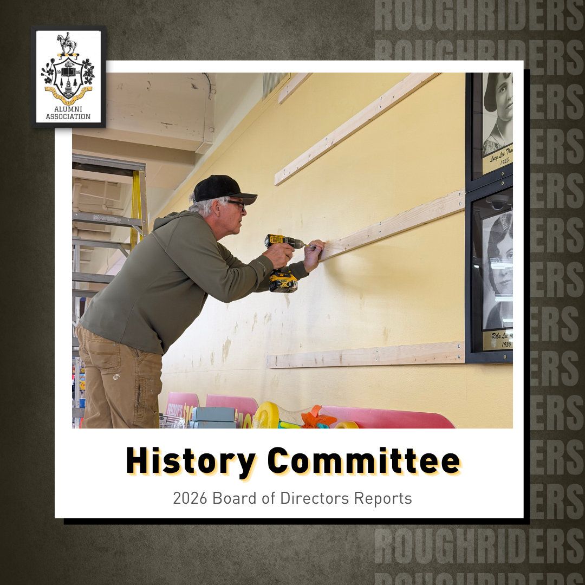
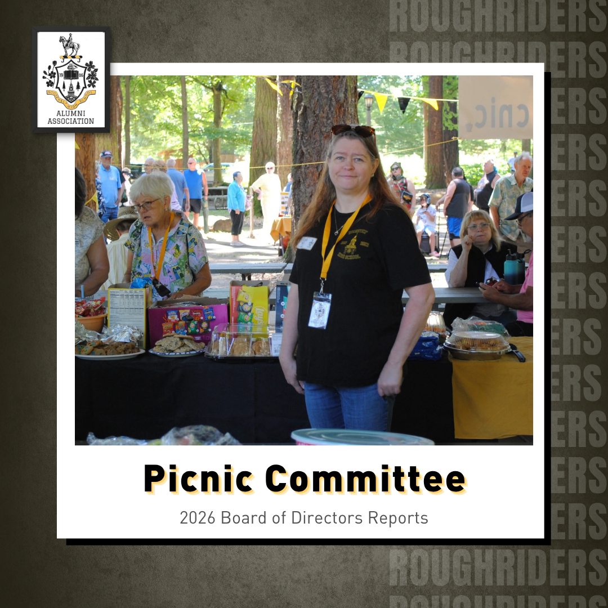
The 2025 picnic was a success with an estimated 400 attending, even more than 2024. The majority stayed from 12 - 3pm, with a
few hanging around long after our afternoon ended. The weather was sunny and mild, the potluck tables were overflowing, and
we had plenty of space in the park so it never felt crowded. There were classes represented from 1950 up to a handful of
current students, plus a few young "Future Riders". 1975 and 2000 had strong attendance to celebrate milestone years. We
had about 14 volunteers day-of that helped with setup, clean up, welcome table, photos, and keeping everything running smoothly.
The 2026 planning is well underway, past practice has streamlined the process. Park reservations and toilets have been ordered
and paid for. In early July we will place the fried chicken order, and do inventory of supplies to see if anything needs to
be replenished. Mimi Cha has volunteered to be the day-of coordinator for the event, Jeanine Sinnot to run the welcome table,
and when we get closer to that date we will look for our day-of volunteers.
The 2027 All-Class Picnic will be held on July 17th at Columbia Park from 12 - 4pm.
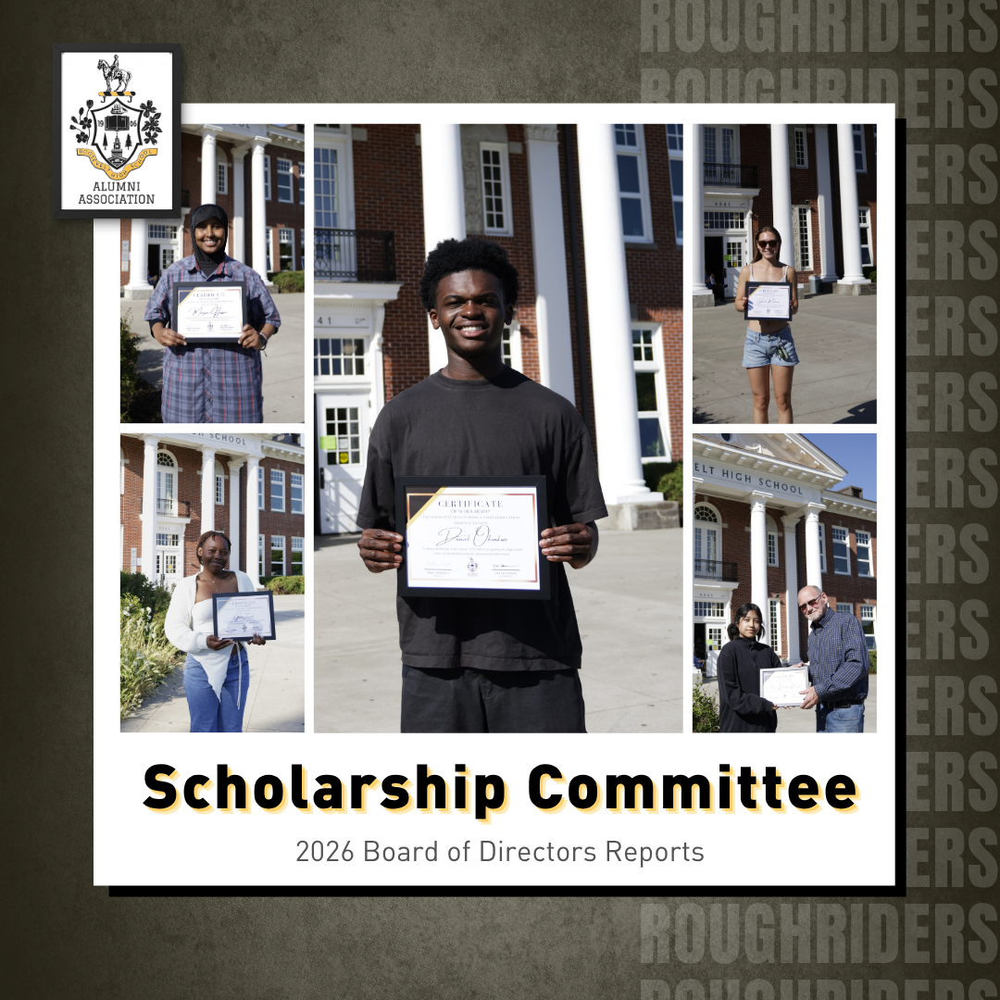
The Class of 2025 Scholarship was awarded at the end of May 2025, just after our last report. We met the 5 winners before the Senior Awards Ceremony to give them their checks and offer our congratulations. Their bios were published in the North Peninsula Review and are available on the RHSAA website. The winners were:
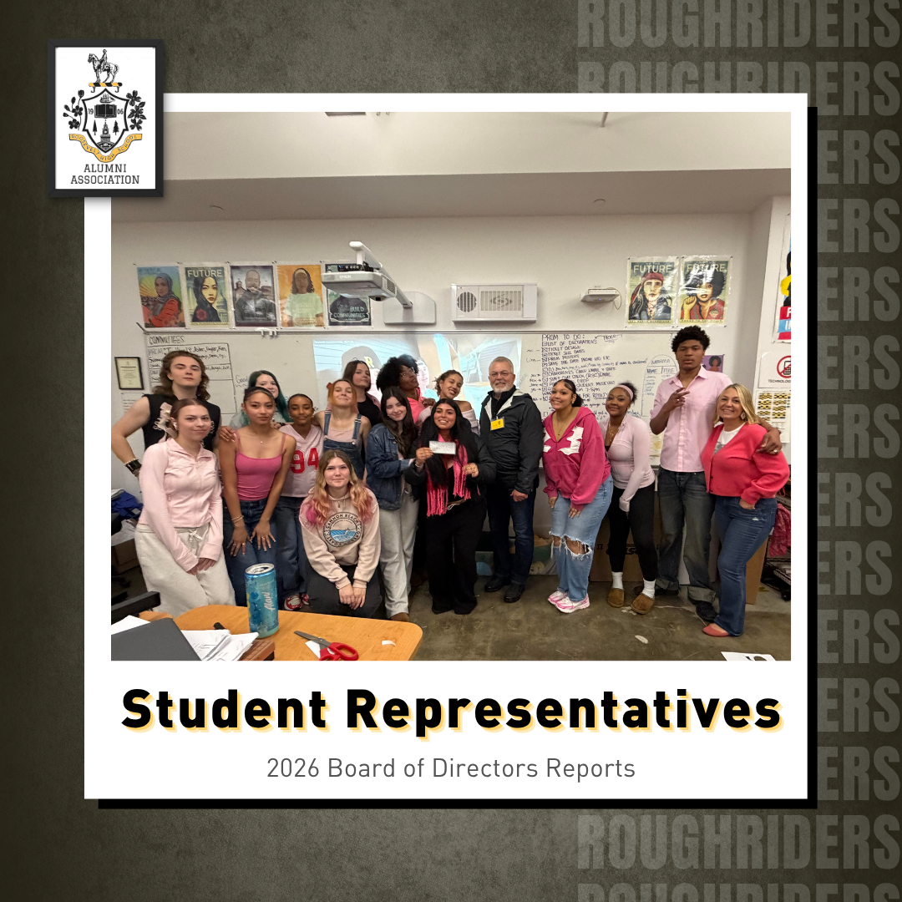
For a number of years, the Board of Directors has noted the need for student voice in our work. We created a new role within
the organization, with one or two Student Representatives serving a one-year term to provide a direct student perspective.
The outline of duties includes writing a monthly submission highlighting a student event or project for alumni to support,
as well as attending each of our three board meetings to present and participate in general discussion.
In June 2025, we opened applications for our first Student Representatives, seeking candidates with a minimum 3.0 GPA who were
rising juniors or seniors. The application asked for general information about the student, along with a sample report on
the previous year’s Homecoming. We received eight strong applications, and the Executive Committee reviewed each at length.
We selected Hazel Patterson (Class of 2026) and Rylan Hayes (Class of 2027). Both students submitted impressive sample reports,
and their involvement complemented each other well. Hazel is active in student leadership and athletics, while Rylan is
involved in the arts. We welcomed them over the summer, communicating about their responsibilities and getting to know
them before their term officially began in September.
Since then, they have submitted a report every month from September through May and will complete their final report in June.
They have also attended our board meetings, actively contributing to discussions and providing valuable insight.
As a first-year pilot, the program has been very successful in the eyes of the Board of Directors, and we look forward to
continuing it in the coming school year.
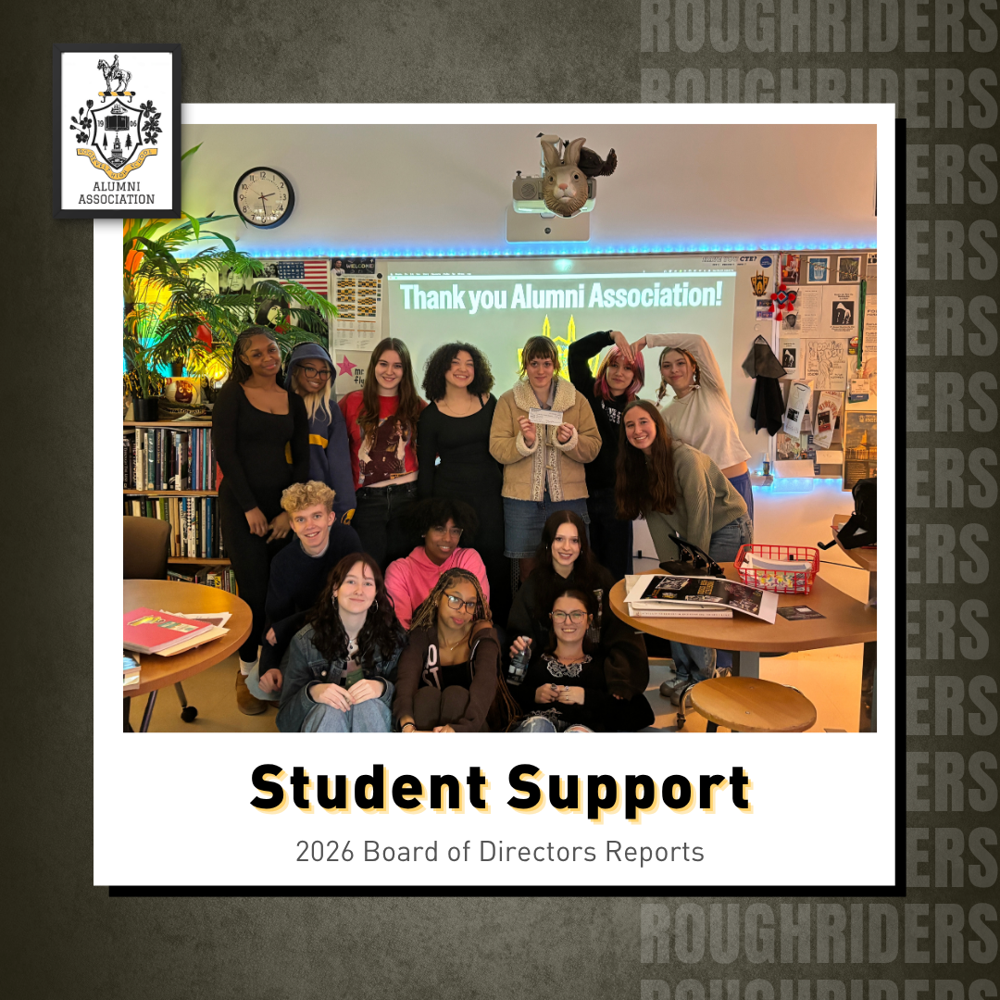
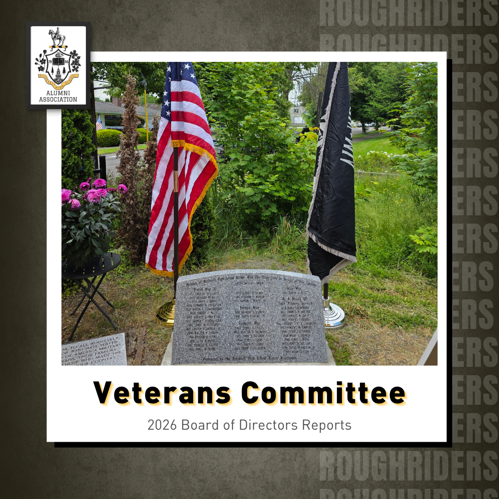
We are planning to host a dedication of the new memorial stone on Memorial Day, on May 25th, 2026, at 11:00 AM. I intend to
clean up the Memorial as needed, this includes trimming the grass and weeds in and near the Memorial. Dick Lovegren will
provide flags for the Memorial Day event and will speak as well. Dick is Roosevelt Class of 1973 and his wife Debbie is
Class of 1974. Dick is an Army Veteran, very active with the POW/MIA in Oregon. Dick lost his brother David Lovegren in
the Vietnam War.
Carolyn Bonnin continues to provide flowers for the Roosevelt High School Veterans Memorial as needed.
Two names were added to the back of the most recent memorial stone by O M Stone Company.
Vietnam War: